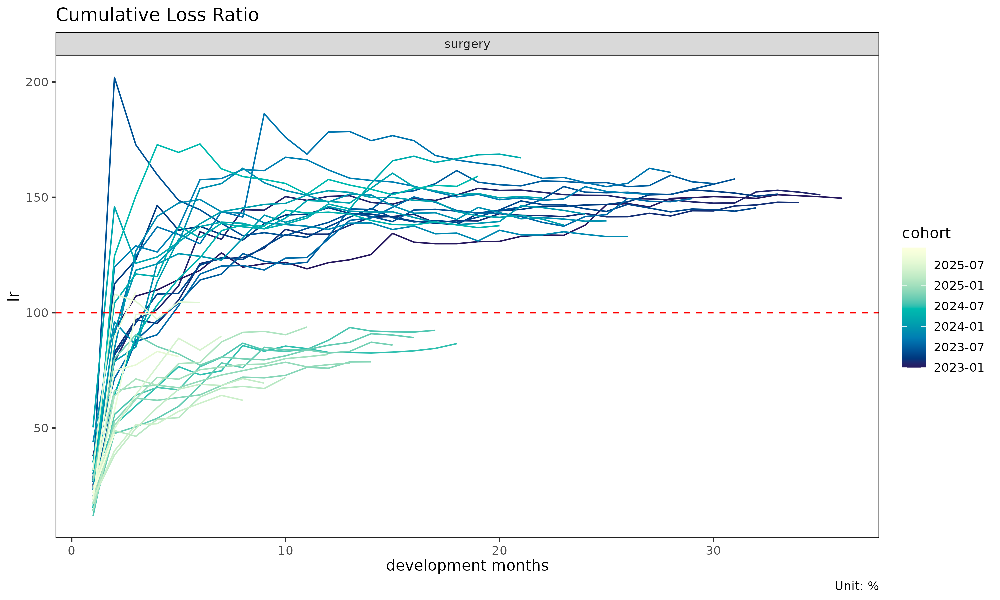
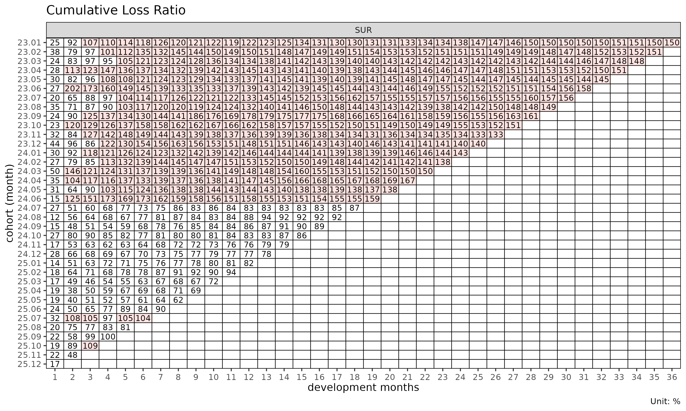

This vignette walks the full lossratio pipeline on the
bundled synthetic experience data, from raw long-format rows to a fitted
loss-ratio projection.
Input shape
lossratio consumes long-format experience data — one row
per (cohort × dev × group) cell. The bundled dataset
experience is a 2,664-row table with calendar /
underwriting period columns at multiple granularities, a
coverage group column, and per-period amounts
(loss_incr, premium_incr).
library(lossratio)
data(experience)
str(experience)
#> Classes 'data.table' and 'data.frame': 2664 obs. of 15 variables:
#> $ coverage : chr "CI" "CI" "CI" "CI" ...
#> $ uy_a : Date, format: "2023-01-01" "2023-01-01" ...
#> $ uy_s : Date, format: "2023-01-01" "2023-01-01" ...
#> $ uy_q : Date, format: "2023-01-01" "2023-01-01" ...
#> $ uy_m : Date, format: "2023-01-01" "2023-01-01" ...
#> $ cy_a : Date, format: "2023-01-01" "2023-01-01" ...
#> $ cy_s : Date, format: "2023-01-01" "2023-01-01" ...
#> $ cy_q : Date, format: "2023-01-01" "2023-01-01" ...
#> $ cy_m : Date, format: "2023-01-01" "2023-02-01" ...
#> $ dev_a : int 1 1 1 1 1 1 1 1 1 1 ...
#> $ dev_s : int 1 1 1 1 1 1 2 2 2 2 ...
#> $ dev_q : int 1 1 1 2 2 2 3 3 3 4 ...
#> $ dev_m : int 1 2 3 4 5 6 7 8 9 10 ...
#> $ loss_incr : num 1262380 11255763 11281309 33602387 7152622 ...
#> $ premium_incr: num 27993106 29183931 29401966 26570540 27471886 ...
#> - attr(*, ".internal.selfref")=<pointer: (nil)>Step 1 — Build the cohort × dev structure
tri <- build_triangle(experience[coverage == "SUR"], groups = coverage)
class(tri)
#> [1] "Triangle" "data.table" "data.frame"
names(tri)
#> [1] "coverage" "n_obs" "cohort"
#> [4] "dev" "loss" "loss_incr"
#> [7] "premium" "premium_incr" "lr"
#> [10] "lr_incr" "margin" "margin_incr"
#> [13] "profit" "profit_incr" "loss_share"
#> [16] "loss_incr_share" "premium_share" "premium_incr_share"- validates required columns (
cy_m,uy_m,loss_incr,premium_incr) and coerces them to the expected types, - aggregates demographic dimensions away (here:
age_band,gender), - standardises raw input names to the per-period slots
loss_incrandpremium_incr, - adds cumulative companions (
loss,premium) — cumulative is the unmarked default; per-period carries the_incrsuffix, - adds derived metrics (
margin/margin_incr,lr/lr_incr, proportions), - standardises the cohort / development columns to the names
cohortanddev, - preserves original column names as attributes
(
cohort_var,dev_var,loss_var,premium_var) for downstream plot labels.
Step 2 — Diagnostics
plot(tri) # cohort trajectories of lr
plot_triangle(tri) # heatmap of lr cells
summary(tri) # group-wise statistics by dev
#> Key: <coverage, dev>
#> coverage dev n_obs lr_mean lr_median lr_wt lr_incr_mean
#> <char> <int> <int> <num> <num> <num> <num>
#> 1: SUR 1 36 0.2522898 0.2393582 0.2525932 0.2522898
#> 2: SUR 2 35 0.8030639 0.7859128 0.7890646 1.3572087
#> 3: SUR 3 34 0.9258662 0.8997912 0.9204360 1.1519240
#> 4: SUR 4 33 0.9856772 0.9716558 0.9778502 1.1797269
#> 5: SUR 5 32 1.0336648 1.0502252 1.0447602 1.2268717
#> 6: SUR 6 31 1.0945723 1.1832332 1.0892484 1.3676102
#> 7: SUR 7 30 1.1226602 1.2307968 1.1260090 1.2795209
#> 8: SUR 8 29 1.1476579 1.2385036 1.1607484 1.2695757
#> 9: SUR 9 28 1.1867831 1.2831350 1.1993421 1.3565716
#> 10: SUR 10 27 1.2189764 1.3392377 1.2161749 1.3443230
#> 11: SUR 11 26 1.2398508 1.3528781 1.2306363 1.2546351
#> 12: SUR 12 25 1.2748031 1.3729018 1.2943160 1.5245126
#> 13: SUR 13 24 1.3088959 1.4291378 1.3202706 1.4851972
#> 14: SUR 14 23 1.3391485 1.4270947 1.3407729 1.4339388
#> 15: SUR 15 22 1.3721398 1.4269041 1.3628824 1.5014265
#> 16: SUR 16 21 1.3940933 1.4310343 1.3828890 1.3639728
#> 17: SUR 17 20 1.4097869 1.4405611 1.3901633 1.2645684
#> 18: SUR 18 19 1.4308462 1.4384627 1.4131833 1.3636669
#> 19: SUR 19 18 1.4674058 1.4314176 1.4992667 1.5607399
#> 20: SUR 20 17 1.4630633 1.4413678 1.4973696 1.5135877
#> 21: SUR 21 16 1.4721202 1.4604722 1.5143362 1.5431636
#> 22: SUR 22 15 1.4559264 1.4614643 1.4742311 1.3944927
#> 23: SUR 23 14 1.4530162 1.4526203 1.4719093 1.4497984
#> 24: SUR 24 13 1.4623530 1.4505401 1.4765376 1.5517800
#> 25: SUR 25 12 1.4673860 1.4686413 1.4836300 1.5166769
#> 26: SUR 26 11 1.4824851 1.4947915 1.4961973 1.6915615
#> 27: SUR 27 10 1.5033314 1.5018660 1.5214048 1.6430325
#> 28: SUR 28 9 1.5055939 1.4952451 1.5305297 1.6071526
#> 29: SUR 29 8 1.4998251 1.4964613 1.5184059 1.6846552
#> 30: SUR 30 7 1.5011849 1.5030635 1.5172585 1.5112226
#> 31: SUR 31 6 1.4961175 1.4880367 1.5006586 1.6444377
#> 32: SUR 32 5 1.4890487 1.4954533 1.4933984 1.7690619
#> 33: SUR 33 4 1.5086788 1.5126330 1.5093436 1.8628826
#> 34: SUR 34 3 1.5021688 1.5068628 1.5004958 1.3432240
#> 35: SUR 35 2 1.5066599 1.5066599 1.5083770 1.2290223
#> 36: SUR 36 1 1.4962058 1.4962058 1.4962058 1.2855791
#> coverage dev n_obs lr_mean lr_median lr_wt lr_incr_mean
#> <char> <int> <int> <num> <num> <num> <num>
#> lr_incr_median lr_incr_wt
#> <num> <num>
#> 1: 0.2393582 0.2525932
#> 2: 1.2618216 1.3280769
#> 3: 1.1517980 1.1728982
#> 4: 1.1167740 1.1742272
#> 5: 1.2663384 1.3110155
#> 6: 1.2676379 1.2752751
#> 7: 1.1820596 1.3386507
#> 8: 1.2534498 1.3649818
#> 9: 1.2365352 1.3663756
#> 10: 1.2201009 1.2953678
#> 11: 1.2665782 1.2806481
#> 12: 1.4833182 1.5935069
#> 13: 1.3855135 1.4462040
#> 14: 1.3888345 1.5051091
#> 15: 1.3047737 1.5731446
#> 16: 1.3118128 1.3730719
#> 17: 1.2342326 1.2723713
#> 18: 1.2757634 1.4565681
#> 19: 1.4756463 1.5827383
#> 20: 1.4438046 1.5321948
#> 21: 1.5642856 1.5803810
#> 22: 1.3370493 1.4612516
#> 23: 1.3865805 1.4391562
#> 24: 1.4213562 1.4363201
#> 25: 1.4433495 1.4198077
#> 26: 1.5738704 1.5628175
#> 27: 1.4080903 1.8551455
#> 28: 1.4361840 1.7482784
#> 29: 1.8359202 1.5456207
#> 30: 1.3661138 1.4455959
#> 31: 1.4673015 1.5987246
#> 32: 1.5883761 1.6630214
#> 33: 1.8353114 1.8309606
#> 34: 1.3503130 1.3440389
#> 35: 1.2290223 1.1775157
#> 36: 1.2855791 1.2855791
#> lr_incr_median lr_incr_wt
#> <num> <num>Step 3 — Link-level diagnostics
Two complementary views of the per-link factor that drives
development. Both are factor-level — they return per-link
estimates only; they do not produce projections
($full).
# Age-to-age factors — multiplicative, input to chain ladder
fit_ata(tri, target = "loss")
#> <ATAFit>
#> alpha : 1
#> sigma_method: locf
#> recent : all
#> regime_break: none
#> use_maturity: FALSE
#> groups : coverage
#> n_groups : 1
#> ata links : 35
# Exposure-driven intensities — additive, input to ED
fit_intensity(tri, target = "loss", exposure = "premium")
#> <IntensityFit>
#> alpha : 1
#> sigma_method: locf
#> recent : all
#> regime_break: none
#> groups : coverage
#> n_groups : 1
#> ata links : 35fit_ata() returns selected ATA factors
per development link. fit_intensity() returns intensity
factors
.
Both feed the projection-level estimators below and are used to detect
the maturity point.
Step 4 — Projection
The projection-level estimators come as a pair of siblings,
fit_cl() and fit_ed(), plus
fit_lr() as the unified interface that combines them.
# Chain ladder (multiplicative projection)
cl <- fit_cl(tri, target = "loss", method = "mack")
plot(cl, type = "projection")
summary(cl)
#> coverage cohort latest loss_ult reserve target_proc_se
#> <char> <Date> <num> <num> <num> <num>
#> 1: SUR 2023-01-01 410248523 410248523 0 0
#> 2: SUR 2023-02-01 976330446 1001441304 25110859 2751818
#> 3: SUR 2023-03-01 978486044 1026151241 47665197 3967868
#> 4: SUR 2023-04-01 2029909922 2186771224 156861302 6942936
#> 5: SUR 2023-05-01 624219442 697669308 73449866 4455635
#> 6: SUR 2023-06-01 802880717 931393933 128513217 17869565
#> 7: SUR 2023-07-01 2539141550 3050990158 511848609 35918003
#> 8: SUR 2023-08-01 393678329 488218204 94539875 15583801
#> 9: SUR 2023-09-01 1364052543 1751869309 387816766 38001618
#> 10: SUR 2023-10-01 979266044 1311793844 332527800 38496097
#> 11: SUR 2023-11-01 604685680 848103124 243417444 35719580
#> 12: SUR 2023-12-01 1026345365 1497869026 471523662 51405333
#> 13: SUR 2024-01-01 1912177598 2901492850 989315252 75674312
#> 14: SUR 2024-02-01 733902485 1160045952 426143467 51719398
#> 15: SUR 2024-03-01 415459872 686574146 271114274 41313265
#> 16: SUR 2024-04-01 3286053525 5687484009 2401430484 122770257
#> 17: SUR 2024-05-01 1451731151 2645801834 1194070683 93024106
#> 18: SUR 2024-06-01 629668308 1209024555 579356246 65346187
#> 19: SUR 2024-07-01 1250954692 2542927187 1291972495 103136527
#> 20: SUR 2024-08-01 425346694 918120581 492773887 65317866
#> 21: SUR 2024-09-01 278156543 635470027 357313485 56737053
#> 22: SUR 2024-10-01 352070325 856446527 504376201 68091257
#> 23: SUR 2024-11-01 99050502 260916098 161865596 41787166
#> 24: SUR 2024-12-01 103194015 295637302 192443287 49617196
#> 25: SUR 2025-01-01 227089023 710560088 483471065 83635489
#> 26: SUR 2025-02-01 939163073 3276849148 2337686075 192418633
#> 27: SUR 2025-03-01 112828843 434950050 322121207 72345359
#> 28: SUR 2025-04-01 82472453 356301149 273828696 68974257
#> 29: SUR 2025-05-01 141214851 697290588 556075737 119238986
#> 30: SUR 2025-06-01 136406104 789468809 653062706 136628653
#> 31: SUR 2025-07-01 149144024 1040451732 891307708 167039609
#> 32: SUR 2025-08-01 116327076 1008356737 892029661 183653360
#> 33: SUR 2025-09-01 67465470 783000254 715534784 179947036
#> 34: SUR 2025-10-01 121626172 2001214853 1879588681 337103186
#> 35: SUR 2025-11-01 15716444 449653411 433936967 194100660
#> 36: SUR 2025-12-01 4825085 850839165 846014080 472741777
#> coverage cohort latest loss_ult reserve target_proc_se
#> <char> <Date> <num> <num> <num> <num>
#> target_param_se target_total_se target_total_cv
#> <num> <num> <num>
#> 1: 0 0 0.000000000
#> 2: 4299411 5104649 0.005097302
#> 3: 5021194 6399717 0.006236621
#> 4: 11297884 13260714 0.006064061
#> 5: 3696917 5789636 0.008298539
#> 6: 8694892 19872657 0.021336468
#> 7: 30501064 47121310 0.015444596
#> 8: 5072721 16388635 0.033568259
#> 9: 20827314 43334743 0.024736288
#> 10: 16992220 42079509 0.032077837
#> 11: 11901733 37650227 0.044393454
#> 12: 22008504 55918535 0.037332059
#> 13: 43971809 87522120 0.030164514
#> 14: 18269126 54851227 0.047283667
#> 15: 11014492 42756344 0.062274911
#> 16: 92689753 153830837 0.027047256
#> 17: 45040850 103354547 0.039063601
#> 18: 20907249 68609309 0.056747655
#> 19: 45568403 112754701 0.044340515
#> 20: 16819267 67448583 0.073463753
#> 21: 11859688 57963310 0.091213288
#> 22: 16219630 69996398 0.081728860
#> 23: 5190764 42108328 0.161386469
#> 24: 6221683 50005754 0.169145618
#> 25: 15668259 85090477 0.119751276
#> 26: 75222223 206599402 0.063048188
#> 27: 10161412 73055494 0.167962951
#> 28: 8575343 69505285 0.195074548
#> 29: 19174475 120770842 0.173200161
#> 30: 22834478 138523652 0.175464376
#> 31: 31445935 169973756 0.163365345
#> 32: 32987225 186592373 0.185045992
#> 33: 27713231 182068556 0.232526816
#> 34: 80113491 346492034 0.173140847
#> 35: 21034521 195237080 0.434194593
#> 36: 66075502 477337155 0.561019255
#> target_param_se target_total_se target_total_cv
#> <num> <num> <num>
# Exposure-driven (additive projection)
ed <- fit_ed(tri, target = "loss", exposure = "premium")
summary(ed)
#> Key: <coverage>
#> coverage ata_from ata_to ata_link mean median wt cv g
#> <char> <num> <num> <fctr> <num> <num> <num> <num> <num>
#> 1: SUR 1 2 1-2 1.34661 1.21766 1.31614 0.47327 1.31614
#> 2: SUR 2 3 2-3 0.58109 0.56432 0.58674 0.37381 0.58674
#> 3: SUR 3 4 3-4 0.39105 0.36751 0.38178 0.43535 0.38178
#> 4: SUR 4 5 4-5 0.31110 0.32321 0.33127 0.35969 0.33127
#> 5: SUR 5 6 5-6 0.27543 0.25088 0.25518 0.43531 0.25518
#> 6: SUR 6 7 6-7 0.21364 0.20479 0.22393 0.31371 0.22393
#> 7: SUR 7 8 7-8 0.18072 0.18227 0.19476 0.36392 0.19476
#> 8: SUR 8 9 8-9 0.16798 0.15484 0.16849 0.67814 0.16849
#> 9: SUR 9 10 9-10 0.14955 0.13195 0.14572 0.33906 0.14572
#> 10: SUR 10 11 10-11 0.12550 0.12095 0.12851 0.31241 0.12851
#> 11: SUR 11 12 11-12 0.13833 0.12898 0.14581 0.39551 0.14581
#> 12: SUR 12 13 12-13 0.12519 0.11356 0.12075 0.34186 0.12075
#> 13: SUR 13 14 13-14 0.11144 0.10927 0.11631 0.35239 0.11631
#> 14: SUR 14 15 14-15 0.10561 0.09421 0.11169 0.43662 0.11169
#> 15: SUR 15 16 15-16 0.08954 0.08726 0.08964 0.34359 0.08964
#> 16: SUR 16 17 16-17 0.08079 0.07993 0.08162 0.24700 0.08162
#> 17: SUR 17 18 17-18 0.08109 0.07612 0.08725 0.28780 0.08725
#> 18: SUR 18 19 18-19 0.08636 0.08620 0.08772 0.34300 0.08772
#> 19: SUR 19 20 19-20 0.07944 0.07838 0.08008 0.25109 0.08008
#> 20: SUR 20 21 20-21 0.07789 0.07935 0.08007 0.32197 0.08007
#> 21: SUR 21 22 21-22 0.06746 0.06606 0.06982 0.26290 0.06982
#> 22: SUR 22 23 22-23 0.06748 0.06394 0.06703 0.32299 0.06703
#> 23: SUR 23 24 23-24 0.06644 0.05971 0.06165 0.39463 0.06165
#> 24: SUR 24 25 24-25 0.06303 0.05711 0.05902 0.45911 0.05902
#> 25: SUR 25 26 25-26 0.06696 0.06136 0.06056 0.39347 0.06056
#> 26: SUR 26 27 26-27 0.06265 0.05387 0.07093 0.44081 0.07093
#> 27: SUR 27 28 27-28 0.06010 0.05136 0.06550 0.36862 0.06550
#> 28: SUR 28 29 28-29 0.06012 0.06544 0.05404 0.31348 0.05404
#> 29: SUR 29 30 29-30 0.05275 0.04745 0.04877 0.23587 0.04877
#> 30: SUR 30 31 30-31 0.05437 0.04834 0.05359 0.25583 0.05359
#> 31: SUR 31 32 31-32 0.06003 0.05618 0.05643 0.41162 0.05643
#> 32: SUR 32 33 32-33 0.05749 0.05671 0.05622 0.07265 0.05622
#> 33: SUR 33 34 33-34 0.04049 0.03873 0.04100 0.08481 0.04100
#> 34: SUR 34 35 34-35 0.03562 0.03562 0.03403 0.15183 0.03403
#> 35: SUR 35 36 35-36 0.03864 0.03864 0.03864 NA 0.03864
#> coverage ata_from ata_to ata_link mean median wt cv g
#> <char> <num> <num> <fctr> <num> <num> <num> <num> <num>
#> g_se rse sigma n_obs n_valid n_inf n_nan valid_ratio
#> <num> <num> <num> <num> <num> <num> <num> <num>
#> 1: 0.09107 0.06919 2930.74378 35 35 0 0 1
#> 2: 0.03508 0.05979 1580.26206 34 34 0 0 1
#> 3: 0.02931 0.07677 1587.18689 33 33 0 0 1
#> 4: 0.02135 0.06444 1319.11055 32 32 0 0 1
#> 5: 0.02087 0.08178 1421.47805 31 31 0 0 1
#> 6: 0.01273 0.05686 937.78642 30 30 0 0 1
#> 7: 0.01141 0.05860 897.25757 29 29 0 0 1
#> 8: 0.02169 0.12870 1792.82291 28 28 0 0 1
#> 9: 0.00943 0.06471 819.85457 27 27 0 0 1
#> 10: 0.00676 0.05263 614.41506 26 26 0 0 1
#> 11: 0.01185 0.08130 1065.55643 25 25 0 0 1
#> 12: 0.00987 0.08170 911.69544 24 24 0 0 1
#> 13: 0.01111 0.09556 1061.51298 23 23 0 0 1
#> 14: 0.01140 0.10209 1123.12990 22 22 0 0 1
#> 15: 0.00630 0.07031 629.63157 21 21 0 0 1
#> 16: 0.00475 0.05825 483.04483 20 20 0 0 1
#> 17: 0.00628 0.07198 644.16296 19 19 0 0 1
#> 18: 0.00745 0.08497 734.39264 18 18 0 0 1
#> 19: 0.00438 0.05473 434.93473 17 17 0 0 1
#> 20: 0.00692 0.08645 667.93909 16 16 0 0 1
#> 21: 0.00444 0.06361 392.59515 15 15 0 0 1
#> 22: 0.00501 0.07472 445.50688 14 14 0 0 1
#> 23: 0.00644 0.10443 566.66985 13 13 0 0 1
#> 24: 0.00532 0.09006 436.45243 12 12 0 0 1
#> 25: 0.00638 0.10534 505.82971 11 11 0 0 1
#> 26: 0.00878 0.12380 684.49355 10 10 0 0 1
#> 27: 0.00834 0.12727 627.18471 9 9 0 0 1
#> 28: 0.00853 0.15779 604.48158 8 8 0 0 1
#> 29: 0.00428 0.08784 300.99606 7 7 0 0 1
#> 30: 0.00553 0.10315 325.88933 6 6 0 0 1
#> 31: 0.01155 0.20459 641.18962 5 5 0 0 1
#> 32: 0.00153 0.02721 80.36414 4 4 0 0 1
#> 33: 0.00211 0.05148 81.83368 3 3 0 0 1
#> 34: 0.00348 0.10217 103.52598 2 2 0 0 1
#> 35: NA NA NA 1 1 0 0 1
#> g_se rse sigma n_obs n_valid n_inf n_nan valid_ratio
#> <num> <num> <num> <num> <num> <num> <num> <num>fit_lr() is the unified loss-ratio interface. The
default method = "sa" (stage-adaptive) uses exposure-driven
before the maturity point and chain ladder after, switching at the
per-group maturity detected from the ATA factors.
method = "ed" or "cl" applies a single stage
throughout.

summary(lr)
#> coverage cohort latest loss_ult reserve premium_ult lr_latest
#> <char> <Date> <num> <num> <num> <num> <num>
#> 1: SUR 2023-01-01 410248523 410248523 0 274192568 1.4962058
#> 2: SUR 2023-02-01 976330446 1001441304 25110859 665667724 1.5107824
#> 3: SUR 2023-03-01 978486044 1026151241 47665197 702047332 1.4771448
#> 4: SUR 2023-04-01 2029909922 2186771224 156861302 1464399411 1.5139132
#> 5: SUR 2023-05-01 624219442 697669308 73449866 483147254 1.4543749
#> 6: SUR 2023-06-01 802880717 931393933 128513217 591568800 1.5796369
#> 7: SUR 2023-07-01 2539141550 3050990158 511848609 1958263736 1.5597190
#> 8: SUR 2023-08-01 393678329 488218204 94539875 327535561 1.4945957
#> 9: SUR 2023-09-01 1364052543 1751869309 387816766 1091733893 1.6079808
#> 10: SUR 2023-10-01 979266044 1311793844 332527800 864204933 1.5129473
#> 11: SUR 2023-11-01 604685680 848103124 243417444 630311112 1.3298743
#> 12: SUR 2023-12-01 1026345365 1497869026 471523662 1057060864 1.3981081
#> 13: SUR 2024-01-01 1912177598 2901492850 989315252 2009045338 1.4274951
#> 14: SUR 2024-02-01 733902485 1160045952 426143467 832229794 1.3793745
#> 15: SUR 2024-03-01 415459872 686574146 271114274 454345989 1.4969280
#> 16: SUR 2024-04-01 3286053525 5687484009 2401430484 3372494517 1.6712898
#> 17: SUR 2024-05-01 1451731151 2645801834 1194070683 1899849125 1.3770835
#> 18: SUR 2024-06-01 629668308 1209024555 579356246 750125232 1.5918247
#> 19: SUR 2024-07-01 1250954692 2542927187 1291972495 2891548083 0.8658750
#> 20: SUR 2024-08-01 425346694 918120581 492773887 976935240 0.9236050
#> 21: SUR 2024-09-01 278156543 635470027 357313485 703906577 0.8920448
#> 22: SUR 2024-10-01 352070325 856446527 504376201 984833526 0.8596968
#> 23: SUR 2024-11-01 99050502 260916098 161865596 324081361 0.7871749
#> 24: SUR 2024-12-01 103194015 295637302 192443287 366444617 0.7813438
#> 25: SUR 2025-01-01 227089023 710560088 483471065 833732379 0.8188282
#> 26: SUR 2025-02-01 939163073 3276849148 2337686075 3286151359 0.9377837
#> 27: SUR 2025-03-01 112828843 434950050 322121207 566316401 0.7193486
#> 28: SUR 2025-04-01 82472453 356301149 273828696 476819836 0.6947510
#> 29: SUR 2025-05-01 141214851 697290588 556075737 1027051058 0.6203897
#> 30: SUR 2025-06-01 136406104 789468809 653062706 783037478 0.8981587
#> 31: SUR 2025-07-01 149144024 1040451732 891307708 859730817 1.0440457
#> 32: SUR 2025-08-01 116327076 1008356737 892029661 1037192179 0.8100543
#> 33: SUR 2025-09-01 67465470 783000254 715534784 611257146 0.9985960
#> 34: SUR 2025-10-01 121626172 2001214853 1879588681 1338462730 1.0894657
#> 35: SUR 2025-11-01 15716444 576954666 561238222 593147597 0.4765917
#> 36: SUR 2025-12-01 4825085 1246569317 1241744232 1022559933 0.1689836
#> coverage cohort latest loss_ult reserve premium_ult lr_latest
#> <char> <Date> <num> <num> <num> <num> <num>
#> lr_ult maturity_from loss_proc_se loss_param_se loss_total_se
#> <num> <int> <num> <num> <num>
#> 1: 1.4962058 3 0 0 0
#> 2: 1.5044162 3 2751818 4299411 5104649
#> 3: 1.4616554 3 3967868 5021194 6399717
#> 4: 1.4932888 3 6942936 11297884 13260714
#> 5: 1.4440097 3 4455635 3696917 5789636
#> 6: 1.5744474 3 17869565 8694892 19872657
#> 7: 1.5580078 3 35918003 30501064 47121310
#> 8: 1.4905808 3 15583801 5072721 16388635
#> 9: 1.6046670 3 38001618 20827314 43334743
#> 10: 1.5179199 3 38496097 16992220 42079509
#> 11: 1.3455310 3 35719580 11901733 37650227
#> 12: 1.4170130 3 51405333 22008504 55918535
#> 13: 1.4442147 3 75674312 43971809 87522120
#> 14: 1.3939010 3 51719398 18269126 54851227
#> 15: 1.5111262 3 41313265 11014492 42756344
#> 16: 1.6864324 3 122770257 92689753 153830837
#> 17: 1.3926379 3 93024106 45040850 103354547
#> 18: 1.6117636 3 65346187 20907249 68609309
#> 19: 0.8794345 3 103136527 45568403 112754701
#> 20: 0.9397968 3 65317866 16819267 67448583
#> 21: 0.9027761 3 56737053 11859688 57963310
#> 22: 0.8696358 3 68091257 16219630 69996398
#> 23: 0.8050944 3 41787166 5190764 42108328
#> 24: 0.8067721 3 49617196 6221683 50005754
#> 25: 0.8522640 3 83635489 15668259 85090477
#> 26: 0.9971693 3 192418633 75222223 206599402
#> 27: 0.7680336 3 72345359 10161412 73055494
#> 28: 0.7472448 3 68974257 8575343 69505285
#> 29: 0.6789249 3 119238986 19174475 120770842
#> 30: 1.0082133 3 136628653 22834478 138523652
#> 31: 1.2102064 3 167039609 31445935 169973756
#> 32: 0.9721986 3 183653360 32987225 186592373
#> 33: 1.2809670 3 179947036 27713231 182068556
#> 34: 1.4951592 3 337103186 80113491 346492034
#> 35: 0.9727000 3 234641929 29930084 236543114
#> 36: 1.2190672 3 419068269 73469903 425459799
#> lr_ult maturity_from loss_proc_se loss_param_se loss_total_se
#> <num> <int> <num> <num> <num>
#> loss_total_cv lr_se lr_cv lr_ci_lower lr_ci_upper
#> <num> <num> <num> <num> <num>
#> 1: 0.000000000 0.000000000 0.000000000 1.4962058 1.4962058
#> 2: 0.005097302 0.007668464 0.005097302 1.4893863 1.5194461
#> 3: 0.006236621 0.009115791 0.006236621 1.4437887 1.4795220
#> 4: 0.006064061 0.009055395 0.006064061 1.4755405 1.5110370
#> 5: 0.008298539 0.011983171 0.008298539 1.4205231 1.4674963
#> 6: 0.021336468 0.033593146 0.021336468 1.5086060 1.6402887
#> 7: 0.015444596 0.024062801 0.015444596 1.5108456 1.6051700
#> 8: 0.033568259 0.050036201 0.033568259 1.3925116 1.5886499
#> 9: 0.024736288 0.039693504 0.024736288 1.5268691 1.6824648
#> 10: 0.032077837 0.048691586 0.032077837 1.4224861 1.6133536
#> 11: 0.044393454 0.059732768 0.044393454 1.2284569 1.4626050
#> 12: 0.037332059 0.052900014 0.037332059 1.3133309 1.5206952
#> 13: 0.030164514 0.043564034 0.030164514 1.3588308 1.5295987
#> 14: 0.047283667 0.065908752 0.047283667 1.2647222 1.5230798
#> 15: 0.062274911 0.094105252 0.062274911 1.3266833 1.6955691
#> 16: 0.027047256 0.045613369 0.027047256 1.5970318 1.7758330
#> 17: 0.039063601 0.054401450 0.039063601 1.2860130 1.4992628
#> 18: 0.056747655 0.091463806 0.056747655 1.4324978 1.7910294
#> 19: 0.044340515 0.038994579 0.044340515 0.8030065 0.9558625
#> 20: 0.073463753 0.069040997 0.073463753 0.8044789 1.0751146
#> 21: 0.091213288 0.082345175 0.091213288 0.7413825 1.0641697
#> 22: 0.081728860 0.071074345 0.081728860 0.7303327 1.0089390
#> 23: 0.161386469 0.129931347 0.161386469 0.5504337 1.0597552
#> 24: 0.169145618 0.136461969 0.169145618 0.5393116 1.0742327
#> 25: 0.119751276 0.102059701 0.119751276 0.6522307 1.0522973
#> 26: 0.063048188 0.062869716 0.063048188 0.8739469 1.1203916
#> 27: 0.167962951 0.129001198 0.167962951 0.5151959 1.0208713
#> 28: 0.195074548 0.145768444 0.195074548 0.4615439 1.0329457
#> 29: 0.173200161 0.117589910 0.173200161 0.4484530 0.9093969
#> 30: 0.175464376 0.176905520 0.175464376 0.6614849 1.3549418
#> 31: 0.163365345 0.197705785 0.163365345 0.8227102 1.5977026
#> 32: 0.185045992 0.179901446 0.185045992 0.6195982 1.3247989
#> 33: 0.232526816 0.297859186 0.232526816 0.6971738 1.8647603
#> 34: 0.173140847 0.258873128 0.173140847 0.9877772 2.0025412
#> 35: 0.409985616 0.398793007 0.409985616 0.1910801 1.7543199
#> 36: 0.341304566 0.416073215 0.341304566 0.4035787 2.0345558
#> loss_total_cv lr_se lr_cv lr_ci_lower lr_ci_upper
#> <num> <num> <num> <num> <num>Step 5 — Structural change diagnostics
detect_regime() checks whether recent cohorts behave
differently from earlier ones. Useful as a preprocessing step before
loss-ratio fitting on a homogeneous subset:
sub <- build_triangle(experience[coverage == "SUR"], groups = coverage)
detect_regime(sub, K = 12, method = "e_divisive")
#> <Regime>
#> method : e_divisive
#> target : lr
#> window (K) : dev_m 1-12
#> cohorts : 25 analysed (11 dropped)
#> regimes : 2
#> breakpoints : 24.07
#> PC1 / PC2 : 81.6% / 8.8%See vignette("regime") for the dedicated
walkthrough.
Where to next
-
vignette("aggregation-frameworks")— when to usebuild_trianglevsbuild_calendarvsbuild_total. -
vignette("projection")— choosing among"sa"/"ed"/"cl"infit_lr(). -
vignette("chain-ladder-reserving")—fit_cl()deep dive (Mack variance, tail factor). -
vignette("triangle-link-and-maturity")—summary(),detect_maturity(), and triangle-style visualisations. -
vignette("regime")—detect_regime()for structural-change diagnosis across cohorts. -
vignette("backtest")— calendar-diagonal hold-out validation withfit_clorfit_lr.